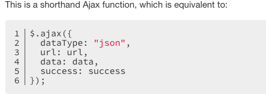
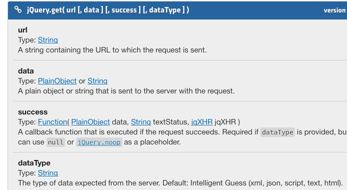

VII. Lyn JS & JSON vid 3.3 jquery & JSON
These are not what you call...
These are what get called for you when something interesting happens
during the lifecycle of an ajax request.
- .ajaxComplete()
- .ajaxError()
- .ajaxSend()
- .ajaxStart()
- .ajaxStop()
- .ajaxSuccess()
For example: You may wish to use ajaxStart() and .ajaxComplete() to print to the page
info to let user know that an ajax request is happening so "pls be patient...".
$(document).ready(function() {
$(document).ajaxStart(function () {
console.log("AJAX starting");
});
$(document).ajaxStop(function () {
console.log("AJAX request ended");
});
$(document).ajaxSend(function () {
console.log("About to request data...");
});
$(document).ajaxComplete(function () {
console.log("Everything's finished!");
});
$(document).ajaxError(function (evt, jqXHR, settings, err) {
console.log("Hmmm. Seems like there was a problem: " + err);
});
$(document).ajaxSuccess(function () {
console.log("Looks like everything worked!");
});
The meat of the request begins here
getData();
});
function getData() {
$.get("testdata.txt", successFn);
}
function successFn(result) {
console.log("Setting result");
$("#content").append(result);
}
function errorFn(xhr, status, strErr) {
alert(strErr);
}
Lyn JQ Essentials: vid 8.3 Jquery's datatypes:
an ajax call to flickr
Dealing with data coming back from the server.
It may be JSON or XML or binary format...etc.
$.getJSON()
$(document).ready(function() {
getJSONData();
});
function getJSONData() {
var flickrAPI =
"http://api.flickr.com/services/feeds/photos_public.gne?jsoncallback=?";
$.getJSON(flickrAPI, {
tags: "space", - this is the topic "tag" content
tagmode: "any",
format: "json",
},
successFn);
}
function getXMLData() {
}
function successFn(result) {
$.each(result.items, function(i, item){ -- i is "index"
$("< img>").attr("src", item.media.m).appendTo("#content");
- jquery's html constructor
if (i == 4) { - limits the num of photos to come back
return false; - tells $.each() iterator to stop running
}
});
}
function errorFn(xhr, status, strErr) {
alert(strErr);
}
Lyn JQ Essentials: vid 8.2 Jquery's Ajax Helper methods
Some Methods that help with common tasks when using ajax
- $.get() - loads data from server with an HTTP GET request
- $.load() - loads data from server and places html into matched selector
- $.getJSON() - loads json data from server with http GET request
- $.post()- loads with a POST function (to manipulate data)

with simple get();
$(document).ready(function() {
getData();
});
function getData() {
$.get("testdata.txt", name of successFn)
}
function successFn(result) {
console.log("setting result");
$('#content').append(result);<--appending content to selector
}
function errorFn(xhr, status, strE rror) {
console.log("There was an error");
}
This is so common that jquery gives you a shorthand to accomplish this entire task
with load();
$(document).ready(function() {
getData();
});
function getData() {
$('#content').load("testdata.txt")
}
function successFn(result) {
console.log("setting result");
}
function errorFn(xhr, status, strE rror) {
console.log("There was an error");
}
Basic jq Ajax call format
- url
- type
- datatype
- success
- error
$(document).ready(function() {
getData();
});
function getData() {
$.ajax({
url: "testdata.txt", //this example's local path
type: "GET",
datatype: "text",
success: successFn,
error: errorFn,
complete: function(hxr, strErr) {
console.log("Request is complete")
}
});
}
function successFn(result) {
console.log("setting result");
$('#content').append(result);
}
function errorFn(xhr, status, strE rror) {
console.log("There was an error");
}
VII. Lyn JS & JSON vid 3.3 jquery & JSON
Enter cdn in the .html
< script src="https://ajax.googleapis.com/ajax/libs/jquery/3.1.0/jquery.min.js">< /script>
then 16 lines of code, Baby!
$(document).ready(function() {
$.getJSON('text.json', function(list) {
var output = '';
for (var entry in list) {
if (list.hasOwnProperty(entry)) {
output += '< h1>' + entry + '< /h1>';
}
for (var subset in list[entry]) {
output += '< h2>' + subset + ': ' +
list[entry][subset] + '< /h2>';
}
}
var update = document.getElementById('demo');
update.innerHTML = output;
}); //getJSON
}); //ready
VII. Lyn JS & JSON vid 3.2 JSONP
May be a hack. Be careful.
VI. Lyn JS & JSON vid 3.1 Importing a JSON file: JSONparse
---- this text.json ----
{
"entry1": {
"word": "first",
"meaning": "First words meaning",
"example": "First Ward example",
"tag": ["tagPlaceHolder"]
},
"entry2": {
"word": "second",
"meaning": "Second word meaning",
"example": "Second word example",
"tag": ["tagPlaceHolder"]
},
...
...
//1. create a request
var request;
//2. check for IE
if (window.XMLHttpRequest) {
request = new XMLHttpRequest();
} else {
request = new ActiveXObject("Microsoft.XMLHTTP");
}
//3. open the request
request.open('GET', 'text.json');
//4. monitor the comms
request.onreadystatechange = function() {
if ((request.readyState === 4) && (request.status === 200)) {
//4.5 parse that shit!
var list = JSON.parse(request.responseText);
//5. If all is well, create output
var output = '';
for (var entry in list) {
if (list.hasOwnProperty(entry)) {
output += '< h1>' + entry + '< /h1>';
}
for (var subset in list[entry]) {
output += '< h2>' + subset + ': '
+ list[entry][subset] + '< /h2>';
}
}
// 7. Create update var to link to the toehold in the document
var update = document.getElementById('demo');
//8. use a (?) method on 'update' to 'own' the innerHTML
update.innerHTML = output;
} // state & status condition
} // comms check fn
//9. finally the send();
request.send();
VI. Lyn JS & JSON vid 2.3 Modifying Arrays
looping through an array nested within an object
< script>
var info = {
"full_name" : "Ray Villalobos",
"title" : "Staff Author",
"nested" : [
{ "key1" : "value1" },
{ "key2" : "value2" },
{ "key3" : "value3" },
{ "key4" : "value4" },
{ "key5" : "value5" }
]
};
var output = '';
var len = info.nested.length;
for (var i = 0; i < len; i++) {
for (var prop in info.nested[i]) {
output += '< li>' + [prop]+': ' + info.nested[i][prop] + '< /li>';
}
}
var update = document.getElementById('links');
update.innerHTML = output;
V. Lyn JS & JSON vid 2.2 Modifying Arrays
objects behave differently from arrays.
Do not use the delete function with Arrays.
simply use object.splice(1,1) or splice(2,1), etc...
use .push(); to add.
IV. Lyn JS & JSON vid 2.1 debug objects: the console.
Dot.notation explanation
JSON obj on a var in < script > tags on the html.
III. Lyn JS & JSON vid3 an Async request: IE gets some love
var request = new XMLHttpRequest(); --instead of this line.
----
var request;
if (window.XMLHttpRequest) {
request = new XMLHttpRequest();
} else {
request = new ActiveXObject('Microsoft.XMLHTTP');
}
----
request.open("GET", 'data.txt');
request.onreadystatechange = function() {
if ((request.readyState === 4) && (request.status === 200)) {
console.log(request);
document.writeln(request.responseText);
}
}
request.send();
--
II. Lyn JS & JSON vid3 an Async request: onreadystatechange
An EVENT HANDLER will run function when something happens.
XMLHttpRequest objs have many events (visible in console):
...
onerror
onaboart
onloadend
... etc.
Let's use onreadystatechange.
var request = new XMLHttpRequest();
request.open("GET", "data.txt");
request.onreadystatechange = function() {
if (request.readyState===4 && request.status === 200){
console.log(request);
}
}
request.send();
I. Lyn JS & JSON vid2 a SYNCH request
XMLHttpRequests
var request = new XMLHttpRequest();
on a var create a request:
request.open("GET", 'data.txt', false);
//false = synchronous (bad idea)
run an open method on that request var.
request.send();
send it off.
if (request.status === 200) {
check it's status. If ok--> produce the responseText obj on the request.
document.writeln(request.responseText);
};